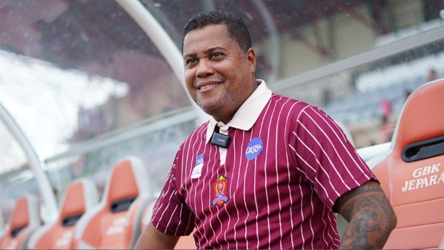
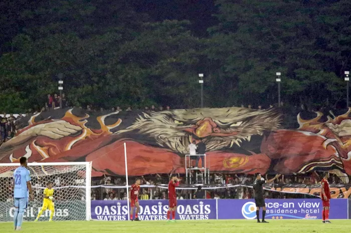

Berita Terbaru

Misi Curi Poin di Tanah Para Raja: Persijap Tantang Malut United

Loyalitas
Jarak Bukan Halangan: Doa Suporter Mengalir ke Markas Lawan
Ribuan kilometer terbentang, namun semangat Banaspati & Jetman tetap bersama tim...
Klasemen Liga
| POS | TIM | PTS |
|---|---|---|
| 1 | Persib Bandung | 47 |
| 2 | Borneo FC | 46 |
| 3 | Persija Jakarta | 41 |
| 4 | Malut United | 37 |
| 17 | Persijap Jepara | 15 |
© 2026 Kalinyamat Sector - Semua Hak Dilindungi